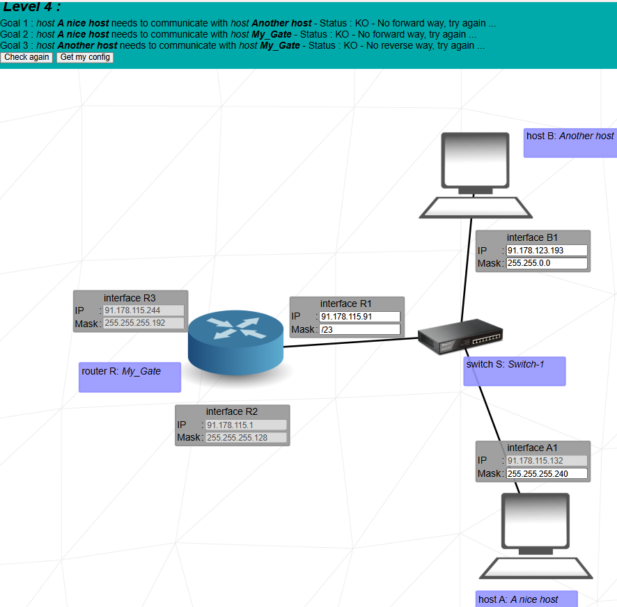
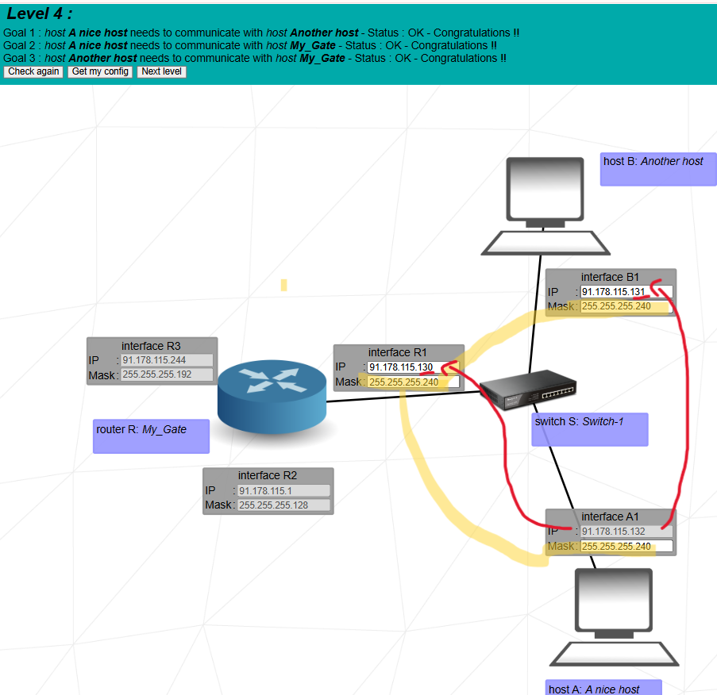

Goal: put Host A, Host B, and router interface R1 in a single LAN behind one switch by choosing a common subnet (we use /28) so that A, B and R1 can all talk to each other.


Host A, Host B, and router interface R1 are connected to the same switch. That means they are in the **same broadcast domain** and must belong to one common IP subnet: same mask and addresses in the same network. None of the masks is fixed, so we are free to choose the subnet; we decide to use /28 (255.255.255.240).
91.178.115.132, mask 255.255.255.240 (editable).91.178.123.193, mask 255.255.0.0 (editable).91.178.115.91, mask /23 (editable).
The masks are all different and B is even in another third octet
(123 instead of 115), so the three devices are not
in the same subnet and cannot behave like one LAN.
All three addresses are now in the same /28 subnet. The router interface R1 sits inside the LAN and acts as gateway for A and B if we add routes later.
We need at least three usable hosts (A, B, R1). Check the options:
/30 is not enough. /29, /28, /27 all work; we pick /28 as a compact subnet that still fits comfortably.
We base the subnet on A’s fixed IP 91.178.115.132.
So any address from 129 to 142 in the last octet is a valid host in the same subnet. We just pick consecutive values for R1 (.130) and B (.131) and keep A at .132.
The switch floods the frame to all its ports. R1 receives it but the IP does not match, so it prints “packet not for me”. A sees its own frame coming back and prints “loop detected” (it discards it). B recognizes its IP and prints “destination IP reached” – communication works.
“In Level 4 host A, host B, and router interface R1 are on the same switch, so they must share one subnet. None of the masks is fixed, so I choose a common mask. I start from A’s address 91.178.115.132 and pick mask /28 (255.255.255.240). With /28 the block size is 16, so 132 belongs to the subnet 91.178.115.128/28, with network 128, broadcast 143, and usable range 129–142. I assign R1 = 91.178.115.130, B = 91.178.115.131, and keep A = 91.178.115.132, all with mask 255.255.255.240. Now A, B, and R1 are in the same LAN 91.178.115.128/28 and can all reach each other through the switch.”